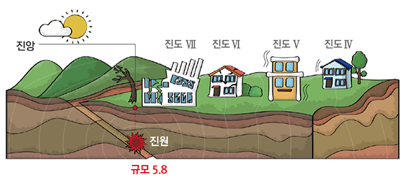

<!DOCTYPE html>
<html lang="ko">
<head>
  <meta charset="UTF-8">
  <meta name="viewport" content="width=device-width, initial-scale=1.0">
  <title></title>
  <link rel="icon" href="../images/favicon.ico" type="image/x-icon" />
  <link rel="stylesheet" href="../plugins/axicon/axicon.min.css" />
  <link rel="stylesheet" href="../plugins/jquery-ui/themes/base/jquery-ui.min.css" />
  <link rel="stylesheet" href="../plugins/jqueryui-timepicker-addon/dist/jquery-ui-timepicker-addon.min.css" />
  <link rel="stylesheet" href="../plugins/jqGrid/css/ui.jqgrid.css" />
  <link rel="stylesheet" href="../css/common.css">
  <link rel="stylesheet" href="../css/sub.css">
  <script src="../plugins/jquery/dist/jquery.min.js"></script>
  <script src="../plugins/jquery-ui/jquery-ui.min.js"></script>
  <script src="../plugins/jquery-ui/ui/i18n/datepicker-ko.js"></script>
  <script src="../plugins/jqueryui-timepicker-addon/dist/jquery-ui-timepicker-addon.min.js"></script>
  <script src="../plugins/jqueryui-timepicker-addon/dist/i18n/jquery-ui-timepicker-ko.js"></script>
  <script src="../plugins/jqGrid/js/jquery.jqGrid.min.js"></script>
  <script src="../plugins/jqGrid/js/i18n/grid.locale-kr.js"></script>
  <script src="../js/ui_common.js"></script>
</head>
<body>

<body>
  <div id="wrap">
    <div>
  <header class="hd wrap flex_wrap f_sb">
    <h1 class="logo hd_logo">
      <a href="../dist/main.html">
        
        
      </a>
    </h1>
    <div class="util">
      <ul class="util_list flex_wrap">
        <li><button type="button" class="btn_grayline">로그인</button></li>
        <li><button type="button" class="btn_grayline">회원가입</button></li>
      </ul>
    </div>
  </header>
  <nav class="gnb_wrap">
    <ul class="gnb wrap flex_wrap f_c" role="navigation">
      <li>
        <a href="#" class="depth1 on active">대국민 지진정보</a>
        <ul class="depth2 active">
          <li><a href="#" class="on">지진 발생정보</a></li>
          <li><a href="#">지진 대비정보</a></li>
          <li><a href="#">지진 행동요령</a></li>
          <li><a href="#">국내 재난안전포털</a></li>
        </ul>
      </li>
      <li>
        <a href="#" class="depth1">지진정책자료</a>
        <ul class="depth2">
          <li><a href="#">지진방재정책</a></li>
          <li><a href="#">지진대응복구</a></li>
          <li><a href="#">지진예방대비</a></li>
          <li><a href="#">지진예방대비</a></li>
          <li><a href="#">지진 정책자료</a></li>
        </ul>
      </li>
      <li>
        <a href="#" class="depth1">지진학술자료</a>
        <ul class="depth2">
          <li><a href="#">지진방재연구</a></li>
          <li><a href="#">지진현장조사</a></li>
          <li><a href="#">지진 관측정보</a></li>
          <li><a href="#">지반 위험정보</a></li>
          <li><a href="#">구조물 내진정보</a></li>
          <li><a href="#">기타 기술정보</a></li>
        </ul>
      </li>
      <li>
        <a href="#" class="depth1">포털소개</a>
        <ul class="depth2">
          <li><a href="#">소개</a></li>
          <li><a href="#">지진재난지식</a></li>
          <li><a href="#">지진재해 지원제도</a></li>
        </ul>
      </li>
    </ul>
  </nav>
</div>
    <!-- CONTENTS ---- S -->
    <div class="wrap con_wrap">
      <ul class="breadcrumb">
        <li><a href="./main.html" class="font_blue"></a></li>
        <li><a href="#">지진상식</a></li>
        <li><a href="#">지진의 이해와 용어</a></li>
        <li><a href="#">지진 크기와 위치</a></li>
      </ul>
      <div class="flex_wrap f_c">
        <div class="snb_wrap section_l">
          <h2 class="tit_snb">지진상식</h2>
          <ul class="alignL" id="snb">
            <li>
              <a href="./knowledge_01.html" class="on">지진의 이해와 용어</a>
              <ul>
                <li><a href="./knowledge_01.html">지진 발생원인</a></li>
                <li><a href="./knowledge_02.html" class="active">지진 크기와 위치</a></li>
                <li><a href="./knowledge_03.html">역사지진</a></li>
                <li><a href="./knowledge_04.html" class="one_line">활성단층과 액상화 현상</a></li>
                <li><a href="./knowledge_05.html">내진, 면진, 제진</a></li>
                <li><a href="./knowledge_06.html">지진사례</a></li>
              </ul>
            </li>
            <li>
              <a href="./dwelling_01.html">주거시설대비 정보</a>
              <ul>
                <li><a href="./dwelling_01.html">지진에 위험한 주택</a></li>
                <li><a href="./dwelling_02.html" class="two_line">지진에 튼튼한<br>&nbsp;우리집 만들기</a></li>
                <li><a href="./dwelling_03.html" class="two_line">지진! 미리 알면<br>&nbsp;대비할 수 있어요</a></li>
                <li><a href="./dwelling_04.html">풍수해보험(지진보험)</a></li>
              </ul>
            </li>
            <li>
              <a href="./declare_01.html">지진재해지원제도</a>
              <ul>
                <li><a href="./declare_01.html">지진피해 신고방법</a></li>
                <li><a href="./declare_02.html">지원 상세내용</a></li>
              </ul>
            </li>
            <li>
              <a href="./researchresults_01.html">연구성과</a>
              <ul>
                <li><a href="./researchresults_01.html">지진방재센터 소개</a></li>
                <li><a href="./researchresults_02.html">주요 연구성과</a></li>
              </ul>
            </li>
          </ul>
        </div>
        <div class="section_r">
          <div class="tit_h2">
            <h2>지진 크기와 위치</h2>
          </div>
          <div class="knowledge intro02">
            <div class="section">
              <div class="tit">
                <h3 class="font_skyblue ico_circleL">규모는 절대적 개념이고, 진도는 상대적 개념입니다.</h3>
              </div>
              <div class="body">
                <dl class="dot_list">
                  <dt>규모(Magnitude)</dt>
                  <dd>발생한 지진에너지의 크기를 나타내는 단위로서 특정 장소와 관계없는 절대적인 개념이기 때문에 하나의 지진에 대한 규모는 동일수치이며, 표현 시 소수 첫째 자리까지 나타냅니다.
                    (예: M5.8) 일반적으로 규모가 1.0씩 상승할 때마다 에너지는 30배 이상 차이 난다고 알려져 있습니다.</dd>
                  <dt>진도(Intensity)</dt>
                  <dd>지진의 세기에 따라 사람의 느낌이나 주변의 물체 또는 구조물의 흔들림 정도를 수치로 표현한 상대적인 개념이며 지진의 진앙거리, 진원깊이에 따라 달라질 수
                    있습니다.<br>진도우리나라 진도표기는 수정 머켈리 진도(MMI)를 사용하고 있으며, 표현 시 로마 숫자를 사용하여 나타냅니다. (예: 진도 Ⅴ)</dd>
                </dl>
                <div class="img_wrap">
                  
                </div>
                <table class="tbl_knowledge">
                  <caption>지진 규모와 진도에 따른 현상(출처:9.12 지진백서, 포항지진 백서)</caption>
                  <thead>
                    <th>진도</th>
                    <th>진도값과 설명</th>
                    <th>규모</th>
                  </thead>
                  <colgroup>
                    <col width="120">
                    <col width="800">
                    <col width="100">
                  </colgroup>
                  <tbody>
                    <tr>
                      <td>Ⅰ</td>
                      <td>사람들은 느낄 수 없지만 지진계에 기록된다</td>
                      <td>1.0-2.9</td>
                    </tr>
                    <tr>
                      <td>Ⅱ</td>
                      <td>소수의 사람들, 특히 건물의 윗층에 있는 소수의 사람들에 의해서만 느낀다. 매달린 물체가 약하게 흔들린다. </td>
                      <td rowspan="2">3.0-3.9</td>
                    </tr>
                    <tr>
                      <td>Ⅲ</td>
                      <td>실내에서 현저하게 느끼게 되는데, 특히 건물의 위층에 있는 사람에게 더욱 그렇다. 그러나 많은 사람들이 지진이라고 인식하지 못한다. 정지하고 있는 차는 약간 흔들린다.
                        트럭이 지나가는 것과 같은 진동이 있고, 지속시간이 산출된다.</td>
                    </tr>
                    <tr>
                      <td>Ⅳ</td>
                      <td>낮에는 실내에 서 있는 많은 사람들이 느낄 수 있으나, 실외에서는 거의 느낄 수 없다. 밤에는 일부 사람들이 잠을 깬다. 그릇, 창문, 문 등이 소리를 내며, 벽이 갈라지는 소리를 낸다. 대형 트럭이 벽을 받는 느낌을 준다. 정지하고 있는 자동차가 뚜렷하게 움직인다.</td>
                      <td rowspan="2">4.0-4.9</td>
                    </tr>
                    <tr>
                      <td>Ⅴ</td>
                      <td>거의 모든 사람들이 지진동을 느낀다. 많은 사람들이 잠을 깬다. 그릇, 창문 등이 깨어지기도 하며, 어떤 곳에서는 회반죽에 금이 간다. 불안정한 물체는 넘어진다. 나무, 전신주 등 높은 물체가 심하게 흔들린다. 추시계가 멈추기도 한다.</td>
                    </tr>
                    <tr>
                      <td>Ⅵ</td>
                      <td>모든 사람들이 느낀다. 많은 사람들이 놀라서 밖으로 뛰어나간다. 무거운 가구가 움직이기도 한다. 벽의 석회가 떨어지기도 하며, 피해를 입는 굴뚝도 일부 있다.</td>
                      <td rowspan="">5.0-5.9</td>
                    </tr>
                    <tr>
                      <td>Ⅶ</td>
                      <td>모든 사람들이 밖으로 뛰어 나온다. 설계 및 건축이 잘 된 건물에서는 피해가 무시할 수 있는 정도지만, 보통 건축물에서는 약간의 피해가 발생한다. 설계 및 건축이 잘못된 부실 건축물에서는 상당한 피해가 발생한다. 굴뚝이 무너지며 운전 중인 사람들도 지진동을 느낄 수 있다.</td>
                    </tr>
                    <tr>
                      <td>Ⅷ</td>
                      <td>특별히 설계된 구조물에는 약간의 피해가 있고, 일반 건축물에서는 부분적인 붕괴와 더불어 상당한 피해를 일으키며, 부실 건축물에서는 아주 심하게 피해를 준다. 창틀로부터 창문이 떨어져 나간다. 굴뚝, 공장 물품더미, 기둥, 기념비, 벽들이 무너진다. 무거운 가구가 넘어진다. 모래와 진흙이 약간 분출된다. 우물물의 변화가 있다. 차량운행 하기가 어렵다.</td>
                      <td rowspan="2">6.0-6.9</td>
                    </tr>
                    <tr>
                      <td>Ⅸ</td>
                      <td>특별히 잘 설계된 구조물에도 상당한 피해를 준다. 잘 설계된 구조물의 골조가 기울어진다. 구조물에 부분적 붕괴와 함께 큰 피해를 준다. 건축물이 기초에서 벗어난다. 지표면에 선명한 균열이 생긴다. 지하 송수관도 파괴된다.</td>
                    </tr>
                    <tr>
                      <td>Ⅹ</td>
                      <td>잘 지어진 목조 구조물이 부서지기도 하며, 대부분의 석조 건물과 그 구조물이 기초와 함께 무너진다. 지표면이 심하게 갈라진다. 기차 선로가 휘어진다. 강둑이나 경사면에서 산사태가 발생하며, 모래와 진흙이 이동한다. 물이 튀며, 둑을 넘어 흘러내린다.</td>
                      <td rowspan="3">7.0 이상</td>
                    </tr>
                    <tr>
                      <td style="letter-spacing:-6px;">ⅩⅠ</td>
                      <td>남아 있는 석조 구조물은 거의 없다. 다리가 부서지고 지표면에 심한 균열이 생긴다. 지하 송수관이 완전히 파괴된다. 지표면이 침하하며, 연약 지반에서는 땅이 꺼지고 지면이 어긋난다. 기차선로가 심하게 휘어진다.</td>
                    </tr>
                    <tr>
                      <td style="letter-spacing:-6px;">ⅩⅡ</td>
                      <td>전면적인 피해 발생. 지표면에 파동이 보인다. 시야와 수평면이 뒤틀린다. 물체가 공중으로 튀어 나간다.</td>
                    </tr>
                  </tbody>
                </table>
                <p class="copyM alignC">&lt;지진 규모와 진도에 따른 현상<span class="copyS">(출처:9.12 지진백서, 포항지진 백서)</span>&gt;</p>
              </div>
            </div>
            <div class="section">
              <div class="tit">
                <h3 class="font_skyblue ico_circleL">진원은 처음 지진이 발생한 땅 속 지점입니다.</h3>
              </div>
              <div class="body">
                <dl class="dot_list">
                  <dt>진원(Hypocenter)</dt>
                  <dd>지진을 일으키며 에너지가 처음 방출된 지점, 일반적으로 지진발생 시 암석의 파괴는 한 점에서 발생하는 것이 아니라, 지진의 크기에 따라 수 km, 수백 km에 달하므로 지진은
                    일정한 영역에서 일어나며, 이 영역을 진원역이라고 합니다. 진원은 진원역 중에서 최초로 지진파가 발생된 지점으로 반드시 진원역의 중심에 해당하는 것은 아닙니다. 진원은 진앙의
                    정보에 진원깊이를 더하여 나타납니다.</dd>
                </dl>
              </div>
            </div>
            <div class="section">
              <div class="tit">
                <h3 class="font_skyblue ico_circleL">진앙은 진원에서 연직으로 지표면과 만나는 지점입니다.</h3>
              </div>
              <div class="body">
                <dl class="dot_list">
                  <dt>진앙(Epicenter)</dt>
                  <dd>원에서 연직으로 지표면과 만나는 지점, 각각의 지진관측소(적어도 3개 이상)에 도달한 P파와 S파의 도착시간 차이(PS시)를 가지고 진원까지 거리를 계산한 후, 각각의 관측소를
                    중심으로 하고, 진원거리를 반지름으로 하는 동심원을 그려 이 원들의 공동 현의 교점으로 추정합니다. <span class="copyS">(출처: 한국지질자원연구원)</span>
                  </dd>
                </dl>
              </div>
            </div>
          </div>
        </div>
      </div>
    </div>
    <!-- CONTENTS ---- E -->
    <footer>
  <div class="footer">
    <div class="wrap flex_wrap f_sb">
      <ul class="sitemap flex_wrap">
        <li><a href="#">이용약관</a></li>
        <li><a href="#" class="font_blue">개인정보 처리방침</a></li>
        <li><a href="#">포털소개</a></li>
      </ul>
      <ul class="family_site flex_wrap">
        <li>
          <select name="family_site" title="국내지진방재 관련사이트">
            <option value="국내지진방재 관련사이트">국내지진방재 관련사이트</option>
            <option value="사이트01">사이트01</option>
            <option value="사이트01">사이트01</option>
            <option value="사이트01">사이트01</option>
            <option value="사이트01">사이트01</option>
            <option value="사이트01">사이트01</option>
            <option value="사이트01">사이트01</option>
            <option value="사이트01">사이트01</option>
            <option value="사이트01">사이트01</option>
            <option value="사이트01">사이트01</option>
          </select>
        </li>
        <li>
          <select name="family_site_2" title="국내지진방재 관련사이트">
            <option value="국내지진방재 관련사이트">국내지진방재 관련사이트</option>
          </select>
        </li>
        <li class="ft_sns">
          <a href="https://www.facebook.com/NDMIKorea/"></a>
          <a href="https://www.youtube.com/channel/UCZqKqkyEkGcFYotEBzEIjiQ"></a>
        </li>
      </ul>
    </div>
  </div>
  <div class="wrap flex_wrap f_sb">
    <div class="flex_wrap alignL">
      <h1 class="logo ft_logo">
        
        
      </h1>
      <address class="addr">
        <p>우) 44538 울산광역시 중구 종가로 365 국립재난안전연구원</p>
        <p>
          <span class="ft_tel">TEL : <a href="tel:052-928-8000">052-928-8000</a></span>
          <span>대표이메일(자료요청 등 문의) : <a href="mailto:ndmi@korea.kr">ndmi@korea.kr</a></span>
        </p>
        <p class="copy">
          Copyright &copy; 2021 by National Disaster Management Research Institute. All Rights Reserved.
        </p>
      </address>
    </div>
  </div>
</footer>
  </div>
</body>

</html>